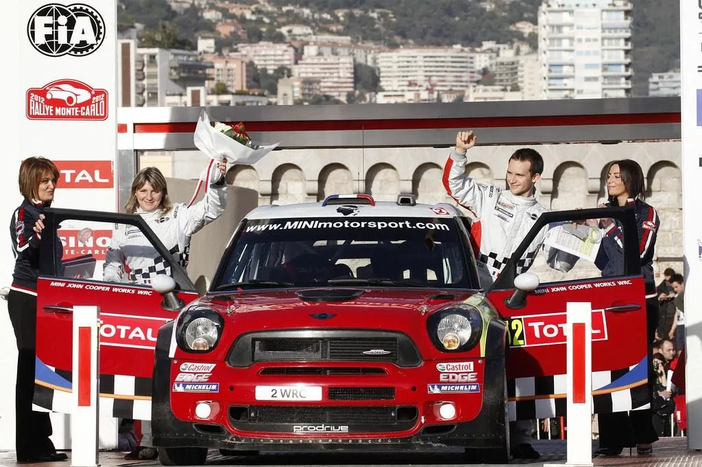
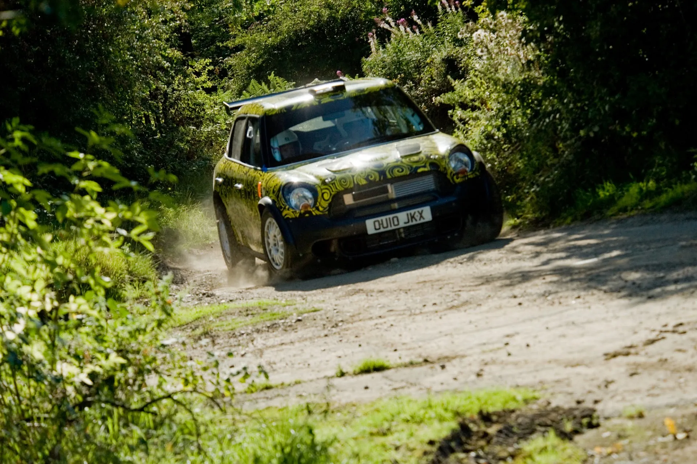
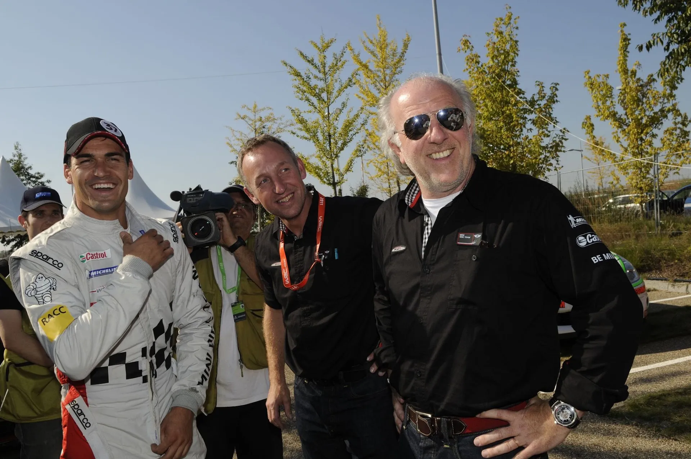
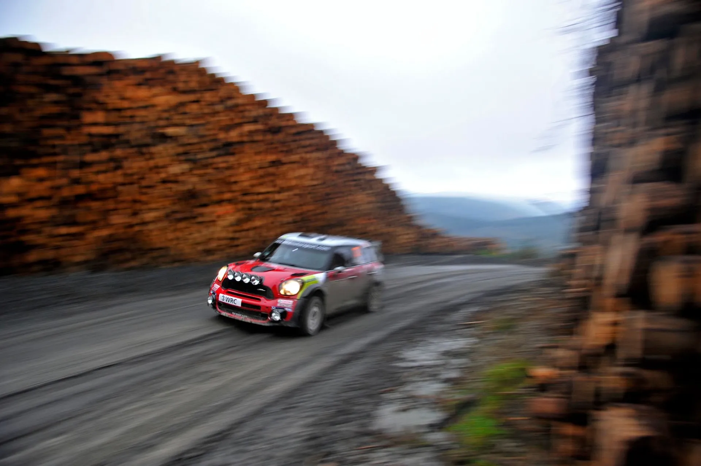
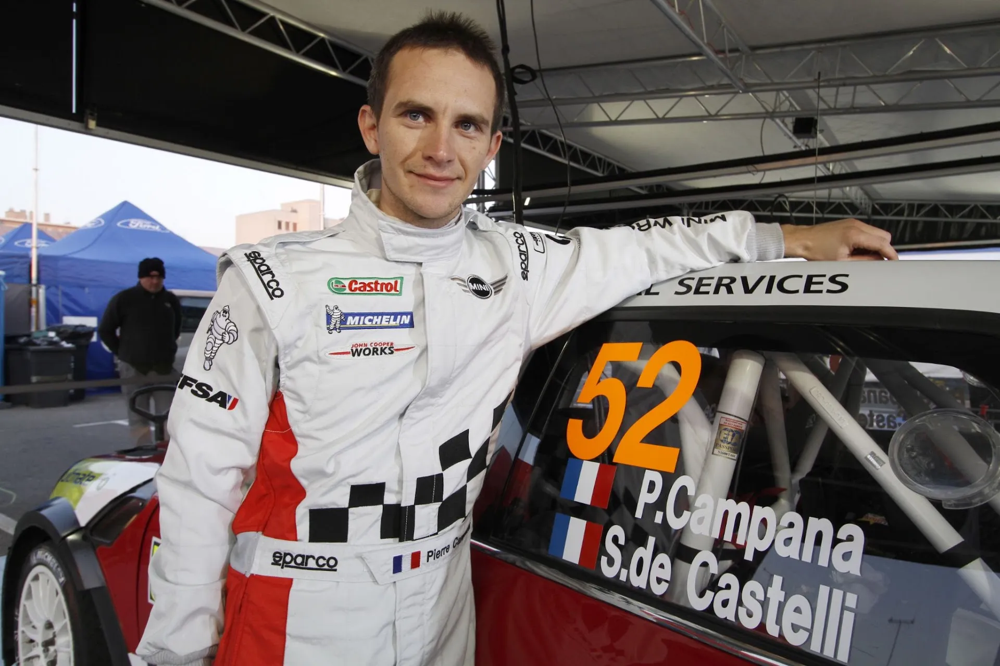
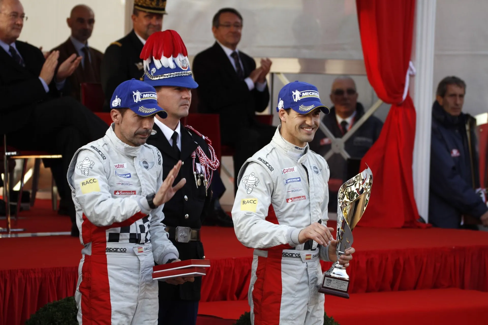
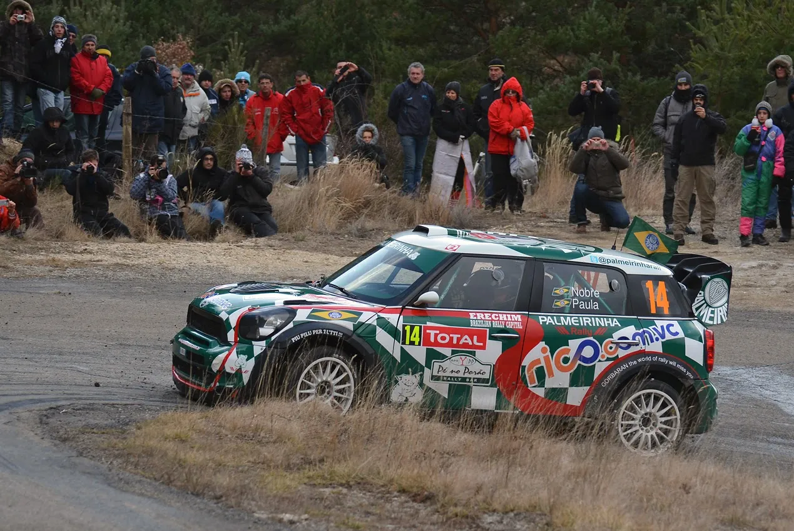
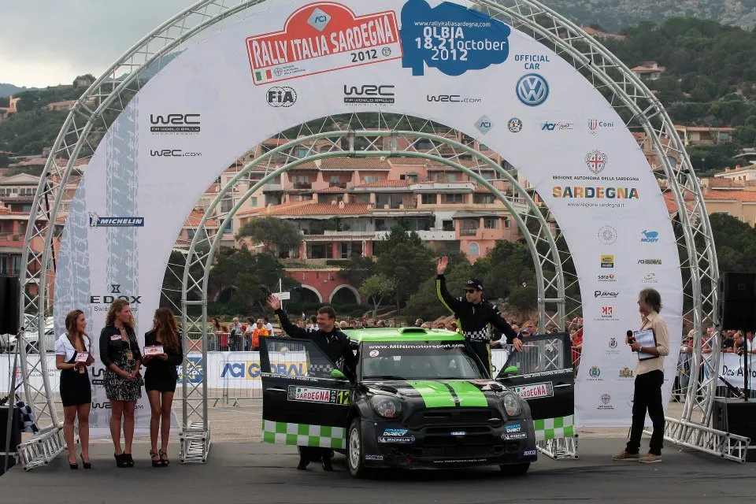
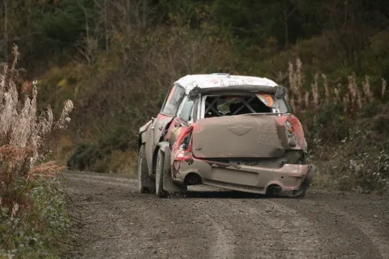

Mini's WRC programme: What Went Wrong?
In 2011, Mini returned to the World Rally Championship after more than four decades away, aiming to recapture their past rallying glory. Partnering with Prodrive, the team that brought success to the Subaru brand in rallying, they introduced the Mini John Cooper Works WRC. However, despite early promise, financial struggles and limited success quickly curtailed the program, ending it prematurely.
What went wrong with Mini’s WRC comeback, and why did BMW pull out of the WRC after just one and a half years? Let's take a look at Mini's short lived journey in the modern-day WRC.
Our story begins in 2010, when Prodrive, after having lost their WRC programme due to Subaru pulling out of the sport, was looking for a new manufacturer to re-enter the sport with. Rumours linked the British team with Hyundai and even Volkswagen, but in the end, in July of the same year, Mini announced their entry for the 2011 WRC season, alongside Prodrive. Parent company BMW said that they were targeting a WRC championship by 2013, which is a rather bold statement. The car was unveiled on October 1, 2010, at the Paris Motor Show.
Almost immediately, driver selection was a hot topic amongst rally fans. Mads Østberg was one of the first names mentioned to be in contention for a seat for 2011. The Norwegian had been running Subaru cars in the WRC as a privateer for some time now, with the Norwegian Adapta team. Østberg became the first driver to test the Mini in September of the same year, with Markko Martin, who also tested Prodrives later Subaru cars, swapping for Østberg later on in the test. Interestingly, the 5 times WRC rally winner had a young driver by the name of Ott Tanak on his side in the test. Per Gunnar Andersson was also a name linked with Mini's programme.
For the second seat, Prodrive wanted a young British driver, with David Richards saying that the team were looking for a driver with personality, a bit more outspoken, a bit more edgy and a bit more proactive as this will suit the Mini brand. Whatever that last part means. Kris Meeke got the gig, beating out the likes of Guy Wilks and Keith Cronin. The Northern Irishman was the 2009 IRC champion, driving for Kronos with a Peugeot 207 S2000.

The Mini Countryman WRC being tested by Kris Meeke in 2010
Picture from BMW Press Global
Another driver who was rumored to be in a Mini Countryman WRC, was 2000 and 2002 World Champion Marcus Gronholm. Gronholm had driven a Prodrive Impreza in Portugal in 2009, setting impressive times, and had also driven a Focus WRC in Sweden the next year. Gronholm even tested the Mini WRC in Portugal, and the rumor mill had him doing a part-time season, with his protégé Jarkko Nikara competing in the rest of the rallies.
The first seat would not go to any of the aforementioned drivers. Østberg chose a full-time campaign with Stobart, and Marcus Gronholm withdrew interest. PG Andersson was set to get the seat until a new name appeared. Dani Sordo became a Free Agent after Citroën chose Sebastien Ogier to partner Sebastien Loeb for 2011, with the youngest of the Sebs outperforming the Spaniard in the latter half of 2010. Sordo also had an offer from M-Sport for the upcoming season, but he'd have to fund his own drive, meaning finding up to a million euros in sponsors. Eventually, the Spaniard signed for Prodrive on a two-year deal.

Dani Sordo became Prodrive's marquee signing
Picture from BMW Press Global
At this point, it's worth mentioning what Prodrive's business model to sustain their WRC program would be. The 2011 cars were cheaper and easily attainable to privateers. They were also a two-for-one effectively because those WRC cars could run in S2000 spec for national series and ERC/IRC, with the same engine, and less aero. So Prodrive's goal was to sell as many of their cars as possible, to keep the team running. This is not dissimilar to what M-Sport does nowadays. Obviously, the British outfit still needed to find a title sponsor.
The team wouldn't compete full-time in 2011, their plan was to use 2011 as a development year for the car, before a full assault in 2012.
The Mini WRC made its debut at Rally Sardinia. The car impressed, with Meeke running fourth in the opening three stages before crashing out and retiring with broken steering on the third day. Sordo, meanwhile, finished sixth, a sound result for the Mini on its debut. In Finland, both cars retired with mechanical problems, with the team also not competing in Rally Estonia beforehand with Meeke, due to the Northern Irishman crashing in testing.
In Germany, however, things would change. Germany is a tarmac rally, which suited Dani Sordo, who in his Citroen years was the only one to even come close to Sebastien Loeb. Sordo beat the factory Ford Fiestas and the privateer DS3 of Petter Solberg, to end the rally in 3rd, giving the Mini its first-ever podium finish, in only its third start. Meeke also had strong pace and was running fifth before he suffered an electrical failure. Germany also marked the first time two Minis were in the points, with Armindo Araújo finishing eighth in a privately entered Mini.
In France, Sordo one-upped himself and finished second, in an impressive performance. The Spaniard led the rally early on and got Mini's first stage win in the process. He had to settle for second, getting beaten by Ogier in the end, by the slim margin of 6s. In Catalunya, Sordo got fourth, but the highlight of the rally was Mini getting a 1-2 in the power stage with Meeke narrowly ahead of the Spaniard.
The 2011 campaign ended with Meeke finishing a strong fourth in the season finale in Wales Rally GB.

The Mini Countryman WRC showed promise in the rounds it competed in the 2011 season
Picture from BMW Press Global
After the season ended, issues between Prodrive and BMW, Mini's parent company, came to The surface. Prodrive were yet to find a title sponsor for the team, with reports saying that David Richards was looking for upwards of 15 million in sponsorship money for the team. Prodrive also used a lot of privateer RRC spec Minis for their testing feedback during the year, not always using their factory drivers and cars.
As the time went on in the off-season, it became more apparent that Prodrive wouldn't be able to do a full season with two cars in 2012, unless they found sponsors, or with extra help from parent company BMW. The German brand, though, had no reason to give the team any money. The deal between BMW and Prodrive was that BMW would develop the engine and pay for the initial development of the Mini Countryman WRC, but the running of the team and the finances of the WRC programme would fall on Prodrive's shoulders.
The mess inside Prodrive became more apparent when David Richards started approaching pay drivers for the second seat of the team for 2012. Richards approached drivers that were not up to WRC standards, and would normally finish behind the leading S2000 cars. One of them was Pieter van Merksteijn, who drove a privateer DS3 in 2011. As if things couldn't get any worse, the team missed the deadline to register as a manufacturer for the 2012 season. Prodrive and BMW reached an agreement with the FIA a month later for the team to compete in 10 rallies, skipping all the long-haul events, but still being considered a manufacturer entry.
Meeke's entry for 2012 came into more doubt after he posted this amazing tweet, which perfectly summed up his situation.
Sure enough, it was announced that Pierre Campana would be driving the second Prodrive Mini in Monte-Carlo, as well as Alsace, Germany and Catalunya. Campana had driven a Mini in the French championship and selected tarmac WRC rounds the previous year, scoring 2 points. Those came in Alsace, where he finished in 9th, 8 minutes behind winner Ogier.
Patrick Sandell was the next driver to be announced, with the Swede being announced for Rally Sweden, and other unspecified rounds. At least Sandell had some pedigree, being the 2006 JWRC champion.
As all this was happening, David Richards stepped down from the role of team principal in the firm's Mini World Rally Championship programme, with technical director Dave Wilcock taking his place.

Pierre Campana would be the team's official second driver on tarmac
Picture from BMW Press Global
The opening round of the 2012 season was a breath of fresh air for the team. Dani Sordo again showed that the Mini was a competitive car, with the Spaniard finishing in 2nd, albeit almost 3 minutes behind the dominant Sebastien Loeb. The Spaniard still beat the factory Ford of Petter Solberg and also the Citroën of Mikko Hirvonen. Maybe this was the result Prodrive needed to confirm to everyone that they mean business and that 2012 would be a good year for them and Mini. Well… as Rally Sweden approached, it became apparent that it wouldn't be the case.
With the teams already preparing for the second round of the championship, BMW announced that Prodrive would be stripped of their works team status, as a direct result of the team not finding enough funds to run the cars for the rest of the season. To ensure that the Mini WRC would be competing in the full 2012 season, BMW gave the works team status to Motorsport Italia, who had been running privateer Minis since 2011. But, who even was Motorsport Italia?

Dani Sordo's 2nd place finish in Monte-Carlo would be for nothing in the end
Picture from BMW BMW Press Global
The team from Italy was an evolution of the Ralliart Italy team That used to run Mitsubishi Lancer Evos back in the day and had been running the Minis of wealthy privateers. For 2012, Motorsport Italia was running the Minis of Portuguese Rally Champion Armindo Araujo, and Brazilian gentleman driver and Palmeiras FC president Paulo Nobre. As you can imagine, this was no prestigious lineup, with the two, and especially Nobre, struggling to match the pace of the S2000 leaders, never mind the other WRC drivers.
Prodrive still remained in charge of handing out updates and development of the Mini WRC, with Motorsport Italia entering the works team by the name of Mini Team Portugal. The British team withdrew their entries for Rally Mexico and effectively ran one car for Dani Sordo part-time for the rest of the season.
As for development, the now factory Minis didn't even run the latest spec in some rallies! Prodrive cars ran a B Spec Mini with a few more updates, whereas Mini Team Portugal kept switching between the B Spec, and the older A Spec based on the proximity between rallies! The team's best result at the mid-season break would be Araujo's 7th in Mexico. That being 12 minutes behind the winner.

Paulo Nobre's best ever finish with the Mini would be 17th in Rally New Zealand, half an hour off the pace.
Picture from jfhweb on flickr
Araujo would run out of sponsorship money in August, and Motorsport Italia would replace him with WRC veteran Chris Atkinson, who had driven for Subaru from 2005 to 2008, and had struggled to find a way back to the WRC.
Atkinson did bring some better results for the team, finishing 5th on his debut in Germany, as well as 6th in Sardinia and 7th in Catalunya, but the Australian was by no means competitive. Atkinson was fighting Sebastien Ogier, who was in an S2000 Skoda, most of the time.
As for Sordo and Prodrive, the season was not going any better either. A 6th in New Zealand was the best the Spaniard could manage. Jarkko Nikara did manage 5th in Catalunya but he was a good 16 minutes off the pace.

A change in the driver lineup would not help Mini Team Portugal
Picture from Motorsport Italia
So the 2012 season came and went, and Mini Team Portugal had competed in all of the necessary rounds of the championship, thus completing the Mini Countryman WRC's homologation. To the surprise of pretty much no one, BMW Pulled out of the sport at the end of the year, ending manufacturer support for the project. Mini Team Portugal also put all of their Mini WRCs up for sale at the end of the season.
Prodrive were still looking to continue running the Mini Countryman WRC in 2013, giving out bold (delusional) statements, that they were targeting a win in the 2013 season opener. Dani Sordo left the team, to re-sign with Citroën, and Kris Meeke also left, in search of a drive for the 2013 season. The team wanted to sign Neuville, with other drivers also rumoured, namely Juho Hanninen and Evgeniy Novikov. All three would end up signing for M-Sport. Other drivers like Jarkko Nikara and Francois Delecour were also mentioned.
Elsewhere, Michał Kościuszko entered Rally Monte Carlo in a Mini, in an ex-Motorsport Italia chassis, with Lotos WRC, also set to do more rounds across the season.
As for Prodrive… The team would not Run in Monte-Carlo, nor in any other rally competitively. The Mini kept being run in local rallies and some privateers until the end of the regs in 2016, but without any notable results.

Picture from u/Madflap on Reddit
That brings us to the end of the story. The Mini WRC project showed promise in the beginning, but without any proper backing, alongside Prodrive's inability to find sponsors, it died a slow death that it didn't deserve.